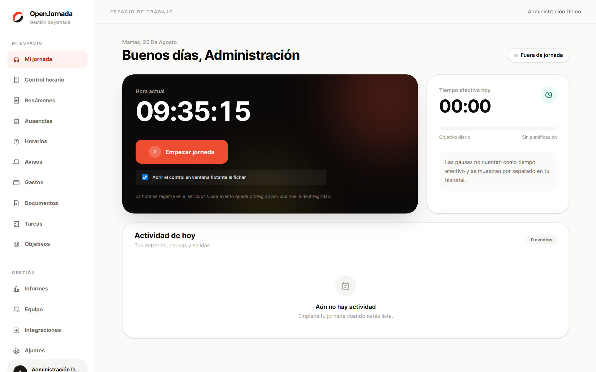
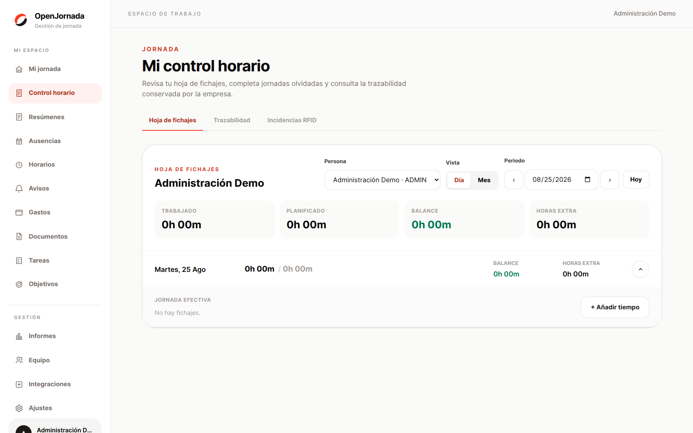
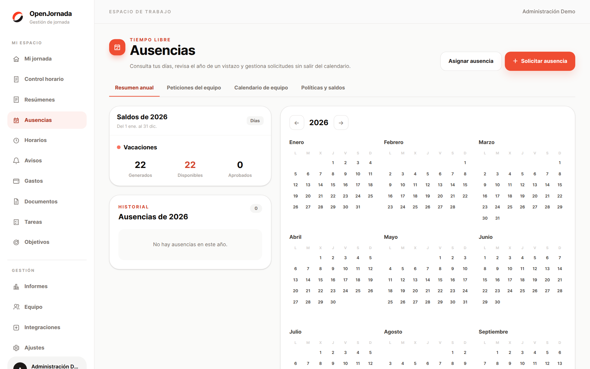
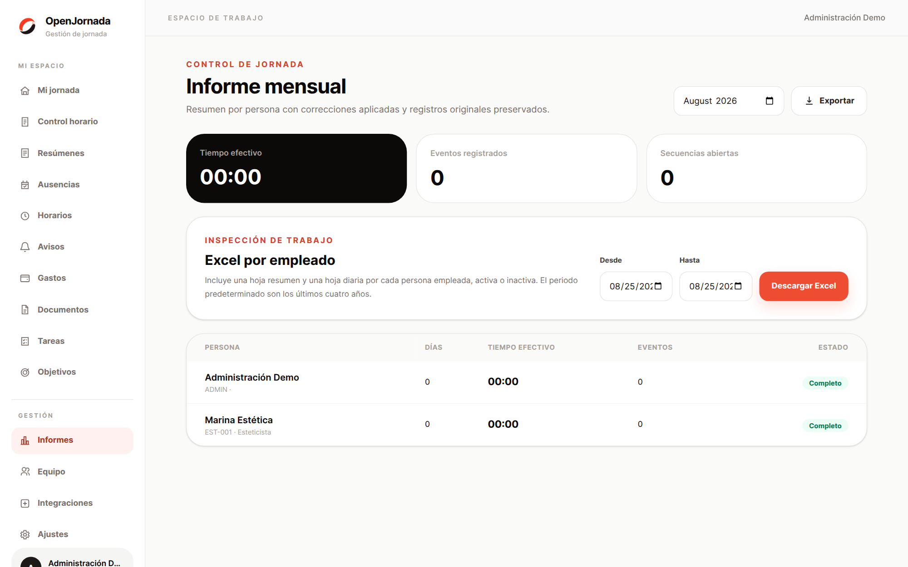
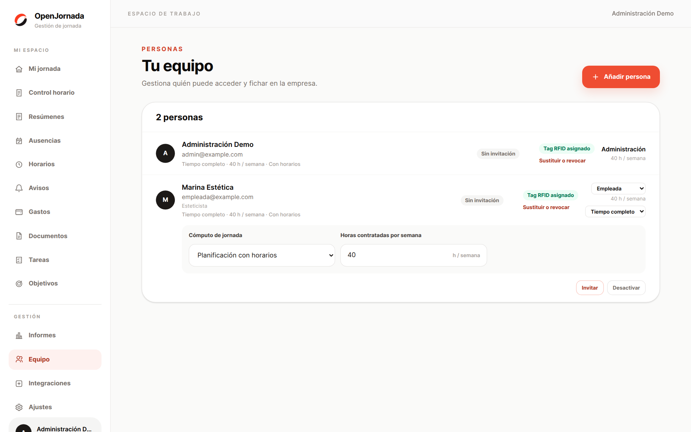

Registrar cada día
El horario concreto de inicio y finalización de la jornada de cada persona.
Gestión laboral para pymes
Registro horario y gestión laboral con una experiencia sencilla, evidencia trazable y control real para la empresa.
El problema
Más tiempo conciliando datos. Menos certeza cuando alguien pregunta.
La obligación
El artículo 34.9 del Estatuto de los Trabajadores define tres mínimos que afectan a las empresas incluidas en su ámbito, con independencia de su tamaño.
El horario concreto de inicio y finalización de la jornada de cada persona.
Los registros deben mantenerse durante cuatro años.
Para personas trabajadoras, representantes legales e Inspección de Trabajo y Seguridad Social.
El riesgo
751-7.500 €
Horquilla legal para infracciones graves en materia de relaciones laborales.
La graduación depende de las circunstancias del caso, entre ellas negligencia o intencionalidad, advertencias previas, número de personas afectadas y perjuicio causado. Información general, no asesoramiento jurídico. Fuentes: LISOS, arts. 7.5, 39 y 40.1.b, texto consolidado del BOE: art. 7, art. 39 y art. 40.
Lo que de verdad hace falta
Un registro útil debe acompañar el trabajo diario y seguir siendo comprensible meses después.
Nuestra solución
Una plataforma de gestión laboral para pymes que une registro horario, ausencias, horarios, documentos, gastos, tareas, objetivos e informes.
Trazabilidad
OpenJornada conserva por separado lo capturado, lo aplicado y la razón del ajuste.
El momento original queda registrado por la autoridad del sistema.
La hora usada para el cálculo se conserva como dato diferenciado.
Los ajustes materiales requieren una explicación explícita.
Huella SHA-256 y auditoría para verificar la secuencia de eventos.
La corrección aporta contexto sin borrar la evidencia anterior.
El producto

Todo empieza aquí. Estado de jornada, tiempo efectivo y actividad del día en una sola vista.
Más allá del fichaje

Control horario y trazabilidad

Ausencias y calendario

Informes y exportación
Para dirección

La información está preparada antes de que llegue la pregunta.
Confianza desde el diseño
Los datos laborales se filtran por organización y se validan en el servidor.
Administración, responsables, plantilla y representación tienen alcances diferenciados.
Los adjuntos sensibles se descargan con autorización y enlaces temporales.
Aplicación, API y frontend se distribuyen juntos; la experiencia es instalable como PWA.
El siguiente paso
OpenJornada ayuda a tu pyme a registrar, revisar y explicar el tiempo de trabajo con una experiencia sencilla para todo el equipo.
Explora OpenJornadahello@di-seo.com